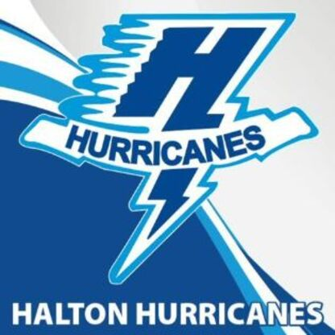

Scouting Report - Brodie Pithie
"Just an amazing instigator, Brodie Pithie has made a name for himself for being hard to play against, and hard to tune out. He plays a great two way game, with solid physicality and scoring ability, making him hard to contain, and even harder to keep from getting under your skin.
I first started coaching Brodie during the summer of his U13 year. Like most, Brodie would improve every time I saw him, but it was always more noticable how much better he was. Well liked on the bench and in the room, I always figured if my spring teams has a captain, he'd be top of the list, always doing as asked, and never taking a shift off.
Serving as the top player in Okanagan's second season with the 09s, Brodie Pithie is a dominant two-way forward with all the makings to have a power-forward type of style as he gets older. He has a mean streak and will dish hits and excels at getting under his opponents' skin. This habit has proven to be very effective, as he can typically divert attention away from the play and draw penalties from his annoyed opponents. He has a heavy shot and can score in bunches if left alone on open ice. He has transitioned to being more of a centerman but has had a lot of success in the past as a right winger as well. He is going to be an interesting player to watch, and with the right development, could be a legitimate junior player."
- Head Scout Drake White
April 10, 2025
 Scouting Report - Michael Pope
"A great player with a fantastic physical edge, Michael Pope excels at getting under his opponents skin, and driving the play hard. He brings the right mentality to every game, showing up and playing with a purpose, finishing his checks and getting shots off- the makings of a proper power forward
One of the biggest pests in the class, Waterloo's Michael Pope has been a thorn in the side of many players over the course of the year. With a massive physical edge, Pope has found his niche by getting under opponents' skin, drawing penalties and putting his team on the power play. Pope has great speed, and uses it to drive along the ing and towards the net, where his quick shot allows him to beat goalies on the rush. His physical gam is very strong, he hits heavily and doesn't hesitate to finish his checks. Additionally, he has a good level of kill to compliment his physical side, with very solid hands and puck-handling abilities.
- Head Scout Drake White
April 10, 2025
Scouting Report - Michael Pope
"A great player with a fantastic physical edge, Michael Pope excels at getting under his opponents skin, and driving the play hard. He brings the right mentality to every game, showing up and playing with a purpose, finishing his checks and getting shots off- the makings of a proper power forward
One of the biggest pests in the class, Waterloo's Michael Pope has been a thorn in the side of many players over the course of the year. With a massive physical edge, Pope has found his niche by getting under opponents' skin, drawing penalties and putting his team on the power play. Pope has great speed, and uses it to drive along the ing and towards the net, where his quick shot allows him to beat goalies on the rush. His physical gam is very strong, he hits heavily and doesn't hesitate to finish his checks. Additionally, he has a good level of kill to compliment his physical side, with very solid hands and puck-handling abilities.
- Head Scout Drake White
April 10, 2025
 Scouting Report - Nicco Seminara
"A real fun player to watch off of Guelph, Nicco Seminara does just a little bit of everything. With good skill across the board, and a strong defensive ability, Seminara can be relied upon in all situations. Despite Guelphs position in the standings, the team did some real damage in the playoffs, taking power houses like Oakville and Halton to the ropes, and Seminara was a key part of this. With a high work ethic, he is poised to take the next step in his young career.
Seminara has been a very fun player to watch on Guelph this year. Despite the team finishin towards the bottom of the standing, Seminara continued to play hard in every game he played, no matter the score. He is a very versatile two-way centerman who does well in faceoffs and possesses a strong defensive IQ. He has a nice shot, and great playmaking abilities, ehich make him a dual threat. He is a very skilled, dynamic skater with great speed, allowing him to outpace his opponents. Has a sneaky physical side, and can catch his opponents by surprise."
- Head Scout Drake White
April 9, 2025
Scouting Report - Nicco Seminara
"A real fun player to watch off of Guelph, Nicco Seminara does just a little bit of everything. With good skill across the board, and a strong defensive ability, Seminara can be relied upon in all situations. Despite Guelphs position in the standings, the team did some real damage in the playoffs, taking power houses like Oakville and Halton to the ropes, and Seminara was a key part of this. With a high work ethic, he is poised to take the next step in his young career.
Seminara has been a very fun player to watch on Guelph this year. Despite the team finishin towards the bottom of the standing, Seminara continued to play hard in every game he played, no matter the score. He is a very versatile two-way centerman who does well in faceoffs and possesses a strong defensive IQ. He has a nice shot, and great playmaking abilities, ehich make him a dual threat. He is a very skilled, dynamic skater with great speed, allowing him to outpace his opponents. Has a sneaky physical side, and can catch his opponents by surprise."
- Head Scout Drake White
April 9, 2025
Scouting Report - Ben Randall
Combining fluid skating technique with a heavy, physical style of play, Ben Randall possesses the key elements needed to excel at the next level. His ability to blend mobility with intensity sets him apart.
April 9, 2025
Scouting Report - Ian Inskip
A natural leader Ian was always respected in the room, and respectful on the bench. With constant drive to be better and reach the OHL, Ian has always known how to work hard.
April 8, 2025
 Scouting Report - Brenner Lammens
Top U16 prospect Brenner Lammens has shown why he should be one of the first players off the board in this year's draft.
April 8, 2025
Scouting Report - Brenner Lammens
Top U16 prospect Brenner Lammens has shown why he should be one of the first players off the board in this year's draft.
April 8, 2025
Scouting Report - Porter Fabbri
Coming off a massive year production-wise, Burlington Eagles forward Porter Fabbri is poised to make the jump out of U18 and show everyone what he's all about.
April 7, 2025
Scouting Report - AJ Underhill
One of the most promising DFDs in this year's OHL Entry Draft, AJ Underhill mixes together physicality and defensive IQ to take the game back to a generation past.
April 5, 2025
 Scouting Report - Nick Ludgate
With an incredible IQ and defensive game, Nick has proven time and time again to be an effective two-way center that might be a sneaky pick in the upcoming U18 OHL Draft.
April 3, 2025
Scouting Report - Nick Ludgate
With an incredible IQ and defensive game, Nick has proven time and time again to be an effective two-way center that might be a sneaky pick in the upcoming U18 OHL Draft.
April 3, 2025

Scouting Report - Thomas Leone
The 2007-born star finished around the top of the league in points with Halton, proving to be one of the teams biggest contributors at boths of the ice.
February 12, 2025
Scouting Report - Marcus Carter
One of the most impressive breakouts in the U18 season, Marcus Carter exploded onto the scene with the Halton Hurricanes this season, displaying elite two-way tendencies, which will make him an appealing draft choice for any OHL team.
April 2, 2025
Scouting Report - Chase Partridge
Chase Partridge is a player who embodies his ability to utilize what he has in the toolbox to be a dominant offensive force on one of the best lines in the OMHA.
March 6, 2025
 Scouting Report - Joseph Szarka
This Brantford 99ers defenseman shows what can happen when you know how to play the game, and grow into your size the right way.
March 2, 2025
Scouting Report - Joseph Szarka
This Brantford 99ers defenseman shows what can happen when you know how to play the game, and grow into your size the right way.
March 2, 2025
 Scouting Report - Brock Chitaroni
Brock Chitaroni is an elite forward playing for Barrie this year, and has continued to impress all throughout the season.
February 12, 2025
Scouting Report - Brock Chitaroni
Brock Chitaroni is an elite forward playing for Barrie this year, and has continued to impress all throughout the season.
February 12, 2025
 Scouting Report - Brighton Anderson
As a high skilled two-way forward, Brighton is most similar to a player like Travis Konecny thanks to his high tempo, and relentless pressure, which causes turnovers and generates offensive chances.
February 5, 2025
Scouting Report - Brighton Anderson
As a high skilled two-way forward, Brighton is most similar to a player like Travis Konecny thanks to his high tempo, and relentless pressure, which causes turnovers and generates offensive chances.
February 5, 2025
 Scouting Report - Anthony Georgiev
With a massive, hulking frame and a constant mean streak, Anthony provides his team with a reliable shutdown defender that can muck it up and produce offensively.
February 4, 2025
Scouting Report - Anthony Georgiev
With a massive, hulking frame and a constant mean streak, Anthony provides his team with a reliable shutdown defender that can muck it up and produce offensively.
February 4, 2025
 Scouting Report - Alex Forrest
Alex Forrest is an elite offensive defenseman out of Oakville, and has proven this year why he should be amongst the top of his class.
February 2, 2025
Scouting Report - Alex Forrest
Alex Forrest is an elite offensive defenseman out of Oakville, and has proven this year why he should be amongst the top of his class.
February 2, 2025
 Scouting Report - William Martyn
When it comes to being dialed in, Will Martyn dominates. Rarely rattled and highly athletic, he gives his team a chance to win night in and night out.
January 31, 2025
Scouting Report - William Martyn
When it comes to being dialed in, Will Martyn dominates. Rarely rattled and highly athletic, he gives his team a chance to win night in and night out.
January 31, 2025
 Scouting Report - Kage Flory
With the new agreement between the CHL and NCAA, we should start seeing a lot of top Americans rising in the OHL draft! It is a very exciting time to be a AAA scout, becasue it presented a whole new cast of players that may have been overlooked before!
Introducing Little Caesars #77, Kage Flory. Kage was the top dog in Buffalo last season before moving to Detroit, where he is again showing why he is one of the top defenseman in this class thanks to his mix of an old and new style of game, with crushing hits and swift skating.
"He's one of the best American 09 defenseman this season. Stylistically, he brings together elements that help him emulate a style of play similar to a high-end puck-moving defenseman, with a physical edge that helps him compare to an older generation of player. He has a relatively large frame, which he uses to protect the puck and outmuscle his opponents, as well as deliver crushing open-ice hits. He is a beatuiful skater who can join the rush well and provide a strong mobile quarterback for any offensive unit. He possesses a heavy shot, which can get through traffic, and an overall great hockey IQ, which allows him to make the right plays both offensively and defensively."
- Head Scout Drake White
Keep an eye out for Kage as he enters the draft, as his stock could be rising, especially after a strong performance at the Silver Stick!
January 19, 2025
Scouting Report - Kage Flory
With the new agreement between the CHL and NCAA, we should start seeing a lot of top Americans rising in the OHL draft! It is a very exciting time to be a AAA scout, becasue it presented a whole new cast of players that may have been overlooked before!
Introducing Little Caesars #77, Kage Flory. Kage was the top dog in Buffalo last season before moving to Detroit, where he is again showing why he is one of the top defenseman in this class thanks to his mix of an old and new style of game, with crushing hits and swift skating.
"He's one of the best American 09 defenseman this season. Stylistically, he brings together elements that help him emulate a style of play similar to a high-end puck-moving defenseman, with a physical edge that helps him compare to an older generation of player. He has a relatively large frame, which he uses to protect the puck and outmuscle his opponents, as well as deliver crushing open-ice hits. He is a beatuiful skater who can join the rush well and provide a strong mobile quarterback for any offensive unit. He possesses a heavy shot, which can get through traffic, and an overall great hockey IQ, which allows him to make the right plays both offensively and defensively."
- Head Scout Drake White
Keep an eye out for Kage as he enters the draft, as his stock could be rising, especially after a strong performance at the Silver Stick!
January 19, 2025